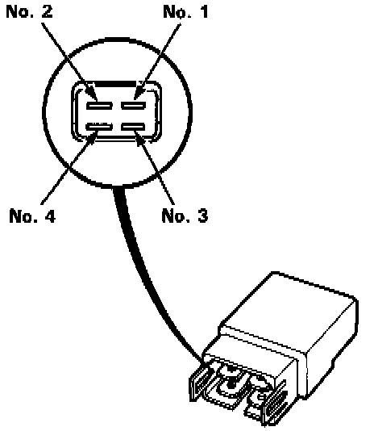

Operation CHARM
: Car repair manuals for everyone.
Home
>>
Acura
>>
1994
>>
Legend Coupe V6-3206cc 3.2L SOHC FI
>>
Repair and Diagnosis
>>
Relays and Modules
>>
Relays and Modules - Brakes and Traction Control
>>
Fail Safe Relay
>>
Diagrams
>>
Connector Views
Connector Views
